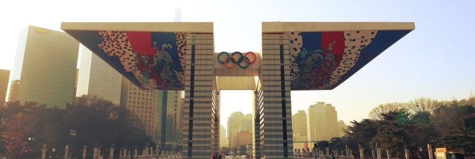

올림픽 공원

올림픽공원 방문안내
1. 올림픽공원 이용안내
- 이용장소: 서울시 송파구 방이동
- 이용기간: 연중무휴
- 이용비용: 무료
2. 공원 주차 안내
- 소형: 10분당 600원/일 최대 20,000원
- 대형: 10분당 1200원/일 최대 24,000원
3. 올림픽공원 에티켓
- 흡연을 삼가하여 주십시오.
- 공원 내에서 다른 관람객들에게 피해가 되는 행동은 삼가하여 주십시오.
- 상업용 사진, 영화(CF) 촬영 시에는 사전 승인을 받으시기 바랍니다.
- 자전거 및 인라인 이용시 과속을 자제하여 주십시오. 토성 내 산책로는 자전거와 인라인의 통행을 제한하고 있습니다.
- 야생동물의 보호를 위해 무분별한 열매 채취를 삼가하여 주십시오.
- 반려견 출입시 위생과 안전사고 예방을 위하여 반드시 목줄과 입 가리개, 배변봉투를 지참하여 이용해 주시기 바랍니다.
- 토성 내 산책로는 자전거와 인라인(전동 킥보드류)의 통행을 제한하고 있습니다.
- 올림픽공원은 드론 비행 금지 및 차도를 제외한 도로에서 전동 휠(킥보드 류) 탑승 금지입니다.
- 올림픽공원 직원에 대한 무례한 언행 및 부당한 요구는 삼가시기를 바랍니다. 서로 존중하는 마음이 인권 보호의 첫걸음입니다.